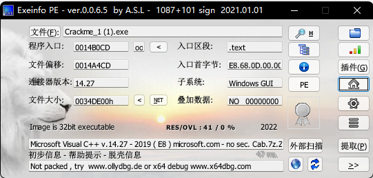
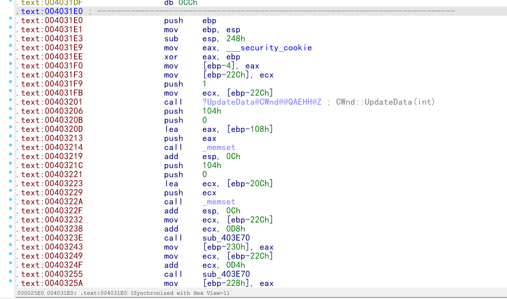
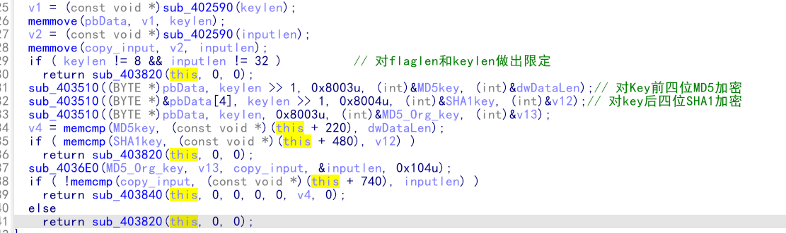
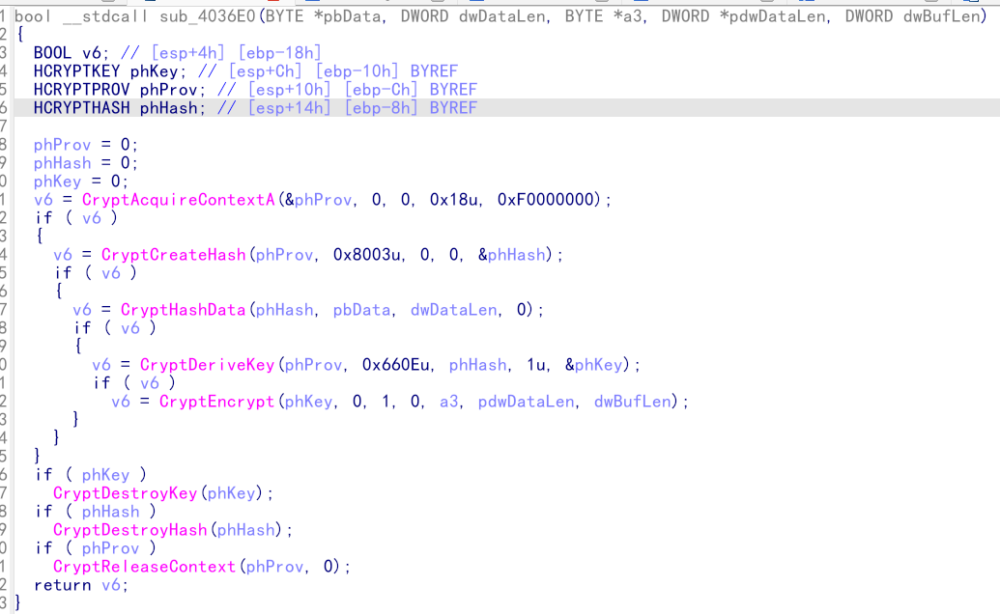
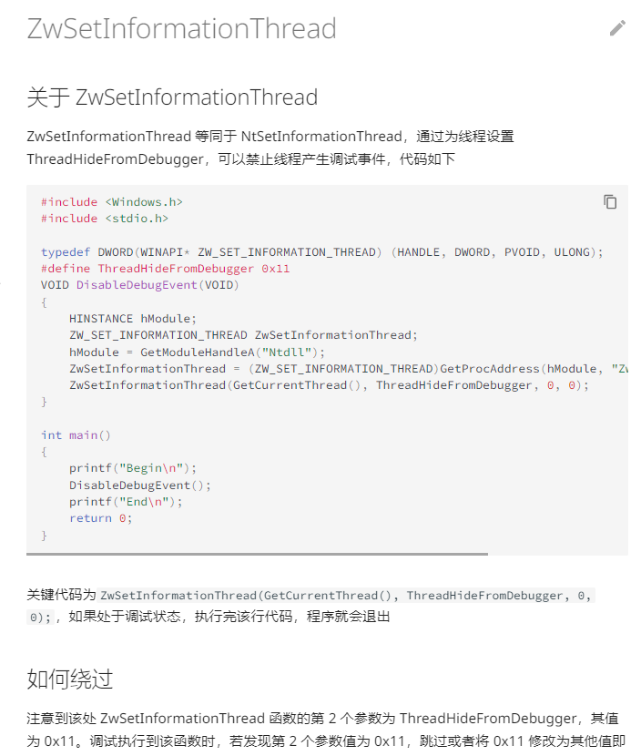
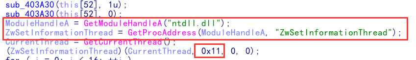
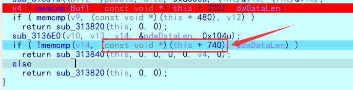

题目附件
# Crackme (MFC 逆向)
日常查壳

拖进 IDA，查找字符串 "wrong"，通过 xref 定位到主要函数

发现大段程序为分析，直接
U (转换成未定义) C (转换成代码)
P (在函数开始处使用 P，从当前地址处解析成函数)
F5 进入查看反汇编

进入加密函数查看
发现是微软官方的加解密函数 微软官方加解密库
通过查询 hash 编码就能知道加密方式
分析可知该函数为关键加密部分

进入之后发现整个函数都是通过调用官方库实现，所以可以直接套用该加密函数稍作修改得到最后的 exp
大概逻辑分析清楚后就需要动态调试得到
尝试在 IDA 里面动态调试，但是一直会在窗口程序调用之前弹飞，进入到 OD 里面调试也会跳飞
猜测可能有反调试技术
看过大佬视频讲解知道是

但是该函数在文件 import 表里没找到，猜测是作者自己手写的，然后搜索字符串，发现了该函数

也发现了能够绕过的关键代码 0x11，在此处下断点，然后运行，待程序运行到此处时，patch0x11 的值然后继续运行，查找到关键密钥。
MD5key = 'D59F8E94B0E1DE6E329518A0C444AA94DE7C8D44' ---------> 'NocT'
SHA1key = 'D59F8E94B0E1DE6E329518A0C444AA94DE7C8D44'
可以利用如下解密脚本解密
import hashlib | |
from Crypto.Util.number import long_to_bytes | |
import string | |
s = 'D59F8E94B0E1DE6E329518A0C444AA94DE7C8D44' | |
for a in string.ascii_letters: | |
for b in string.ascii_letters: | |
for c in string.ascii_letters: | |
for d in string.ascii_letters: | |
m = (a+b+c+d).encode() | |
# r1 =hashlib.md5 (a).digest () MD5 解密 | |
r2 = hashlib.sha1(m).hexdigest() #SHA1 解密 | |
if r2.upper()==s: | |
print(m) | |
#return b'uRne' |
所以 key = NocTuRne
因为原函数逻辑里面还要对整体的 keyMD5 加密再做后面的运算，所以
MD5_Org_key = '5C53A4A41D52437A9FA1E9C26CA59090'
接着还需要得到真正的加密后的 flag 的密文，

可以通过动调在这里得到，动调的时候得人工更改前面一个函数的跳转，以使其跳转到我们需要的函数。
得到
Encrypted_flag[] ={0x5B, 0x9C, 0xEE, 0xB2, 0x3B, 0xB7, 0xD7, 0x34, 0xF3, 0x1B, 0x75, 0x14, 0xC6, 0xB2, 0x1F, 0xE8, 0xDE, 0x33, 0x44, 0x74, 0x75, 0x1B, 0x47, 0x6A, 0xD4, 0x37, 0x51, 0x88, 0xFC, 0x67, 0xE6, 0x60, 0xDA, 0x0D, 0x58, 0x07, 0x81, 0x43, 0x53, 0xEA, 0x7B, 0x52, 0x85, 0x6C, 0x86, 0x65, 0xAF, 0xB4};
之后就可以写脚本直接解出 flag 了
#include <stdbool.h> | |
#include <windows.h> | |
#include <windef.h> | |
#include <wincrypt.h> | |
#include <stdio.h> | |
bool __stdcall encflag(BYTE *key, DWORD dwDataLen, BYTE *input, DWORD *pdwDataLen, DWORD dwBufLen) { | |
BOOL v6; | |
HCRYPTKEY phKey; | |
HCRYPTPROV phProv; | |
HCRYPTHASH phHash; | |
phProv = 0; | |
phHash = 0; | |
phKey = 0; | |
v6 = CryptAcquireContextA(&phProv, 0, 0, 0x18u, 0xF0000000); | |
if (v6) { | |
// CryptGetHashParam (phHash, 2u, key, (DWORD *) v8, 0); 在加密函数中会将 hash 值写入 key->addr 的值 | |
v6 = CryptCreateHash(phProv, 0x8003u, 0, 0, &phHash); | |
if (v6) { | |
v6 = CryptHashData(phHash, key, dwDataLen, 0); // 将 key 按 hashalg 生成 写入 key->addr | |
if (v6) { | |
v6 = CryptDeriveKey(phProv, 0x660Eu, phHash, 1u, &phKey); | |
CryptDecrypt(phKey, 0, 1, 0, input, pdwDataLen); | |
for (int i = 0; i < 32; ++i) { | |
putchar(input[i]); | |
} | |
} | |
} | |
} | |
if (phKey) | |
CryptDestroyKey(phKey); | |
if (phHash) | |
CryptDestroyHash(phHash); | |
if (phProv) | |
CryptReleaseContext(phProv, 0); | |
return v6; | |
} | |
void main() { | |
BYTE flag_data[] = {0x5B, 0x9C, 0xEE, 0xB2, 0x3B, 0xB7, 0xD7, 0x34, 0xF3, 0x1B, 0x75, 0x14, 0xC6, 0xB2, 0x1F, 0xE8, | |
0xDE, 0x33, 0x44, 0x74, 0x75, 0x1B, 0x47, 0x6A, 0xD4, 0x37, 0x51, 0x88, 0xFC, 0x67, 0xE6, 0x60, | |
0xDA, 0x0D, 0x58, 0x07, 0x81, 0x43, 0x53, 0xEA, 0x7B, 0x52, 0x85, 0x6C, 0x86, 0x65, 0xAF, 0xB4}; | |
BYTE keyBuf[] = {0x5c, 0x53, 0xa4, 0xa4, 0x1d, 0x52, 0x43, 0x7a, 0x9f, 0xa1, 0xe9, 0xc2, 0x6c, 0xa5, 0x90, 0x90}; // 就是 key 的 md5 | |
DWORD dwDataLen_2; | |
DWORD *pdwDataLen = &dwDataLen_2; | |
*pdwDataLen = 0x20; | |
encflag(keyBuf, 0x10, flag_data, pdwDataLen, 0x104); | |
} |
DASCTFH@sh_a